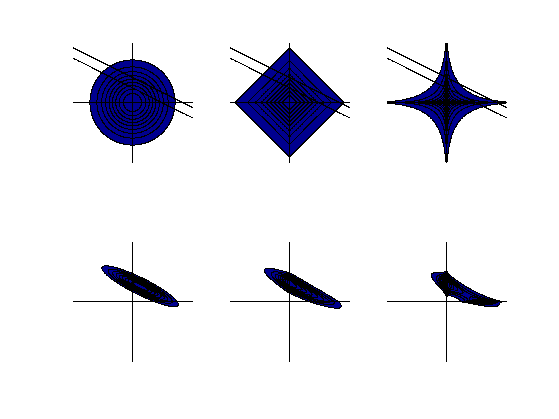

function sparsePostPlot
ext = 3; pext = 10; N = 1000;
h = (2*pext)/(N-1);
x = -pext:h:pext;
ii = find(x >= -ext & x <= ext);
[x,y] = meshgrid(x,x);
tau = sqrt(2);
p_L = tau^2/4*exp(-tau*(abs(x)+abs(y)));
sigma = 1;
p_G = 1/sqrt(2*pi)^2/sigma^2*exp(-1/2/sigma^2*(x.^2+y.^2));
alpha = 0.4;
p_S = 5.6447^2 * exp(-4.2628*(abs(x).^alpha+abs(y).^alpha));
m = [0;1]; d = [0.5,1]; scale = 10;
p_like = 1/sqrt(2*pi)^2*exp(-scale * ((x - m(1)) * d(1) + (y - m(2)) * d(2)).^2);
for i = 1:3
subplot(2,3,i)
if i == 1, p = p_G; elseif i == 2, p = p_L; else p = p_S; end
makeplot(p,x,y,ext,h,ii)
hold on
contour(x,y,p_like,1,'k');
hold off
caxis([0,1]);
subplot(2,3,i+3)
post = p.*p_like;
post = post / sum(post(:));
makeplot(post,x,y,ext,h,ii)
end
printPmtkFigure('sparsePost')
function makeplot(p,x,y,ext,h,ii)
cla
p = p / sum(p(:));
[v,levels] = plevels(p);
caxis([0,1]);
[C,h] = contourf(x(ii,ii),y(ii,ii),p(ii,ii),v);
labels = getlabels(C);
for i = 1:length(h)
ind = find(abs(v-labels(i)) < 1e-6*max(v));
if length(ind) ~= 1, error('Shit'), end;
try
set(h(i),'CData',1-levels(ind),'Edgecolor','none');
catch
end
end
hold on
line([[0 -ext];[0 ext]],[[-ext 0];[ext 0]],'Color','black');
hold off
axis equal
axis tight
axis off
caxis([0,1]);
function labels = getlabels(CS)
v = []; i =1;
while i < size(CS,2),
v = [v,CS(1,i)];
i = i+CS(2,i)+1;
end
labels = v;
function [v,levels] = plevels(p)
thres = (1:-0.001:0)*max(p(:));
mass = zeros(length(thres),1);
for i = 1:length(thres)
ii = p > thres(i);
mass(i) = sum(p(ii));
end
levels = sort([0.1:0.1:0.9],'ascend');
for i = 1:length(levels)
v(i) = interpolate(mass,thres,levels(i));
end
function ya = interpolate(x,y,a)
if a <= x(1)
ya = y(1);
elseif a >= x(end)
ya = y(end);
else
dx = x(2:end)-x(1:end-1);
ii = sum(x <= a);
lambda = (a - x(ii)) /dx(ii);
ya = ((1-lambda/2)*y(ii)+lambda/2*y(ii+1));
end
